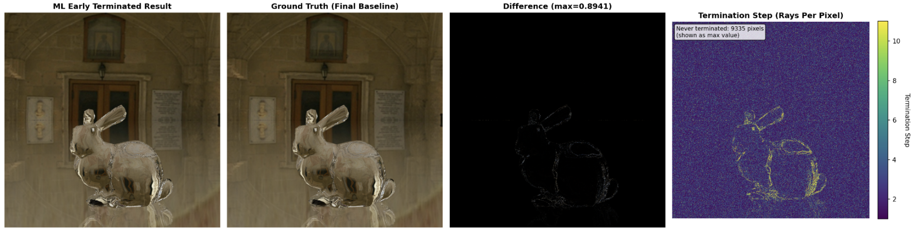
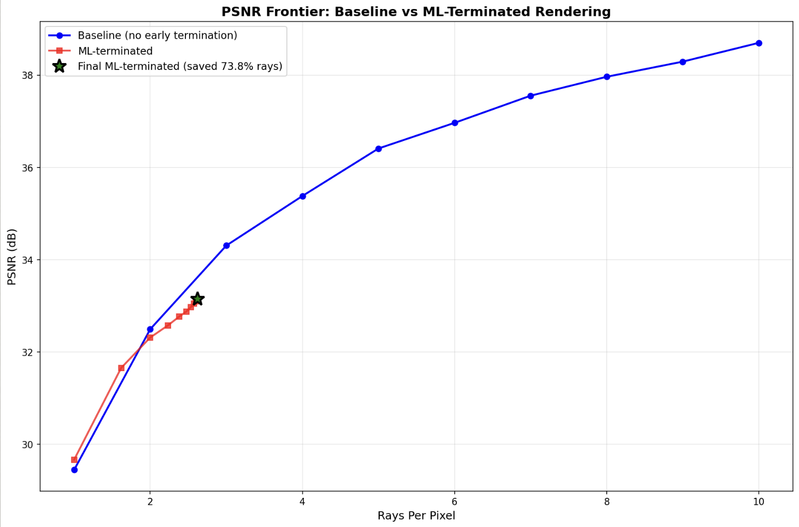

NET-RT: Neural Early Termination for Ray Tracing
Neural Rendering, Adaptive Sampling, Computer Graphics
MIT Computer Graphics Final Project, Runner Up for SIGGRAPH
2025
Student
NET-RT explores whether a small neural network can make ray tracing faster by predicting when each pixel has received enough samples. For our MIT Computer Graphics final project, Theo Jiang and I built a progressive path tracing pipeline, generated a paired rendering dataset, and adapted SplitterNet to predict both final pixel colors and confidence. The model lets predictable regions stop sampling early while more difficult regions continue rendering. On a held-out glass bunny scene, the CPU prototype used about 74% fewer rays and reduced rendering time by 55.5%.
Challenge
Ray tracing can produce physically accurate images, but smooth results often require hundreds or thousands of samples per pixel. Those samples are not equally useful everywhere: diffuse surfaces and uniformly lit areas may converge quickly, while edges, glossy reflections, and refractive materials such as glass need more computation. A uniform sampling budget spends rays on regions that are already predictable. We wanted to test whether a lightweight neural network could predict both a pixel's final color and its confidence early enough to stop unnecessary sampling, while keeping difficult regions active.
Approach
We treated early termination as a prediction problem closely related to image denoising. A useful model needed to reconstruct a clean image from a partially converged render, estimate how much to trust each prediction, and remain cheap enough to run inside the rendering loop. This led us to adapt SplitterNet, a lightweight image restoration architecture, and organize the project around data generation, model training, and integration with the ray tracer.
Because we needed paired images at different sample counts, we built a C++ progressive path tracer using the GLOO framework and a Python automation pipeline. The renderer uses stratified jittered sampling, while the automation varies camera positions and orientations and records both individual sample contributions and cumulative renders with their metadata. We generated 1,000 images across 100 training scenes and reserved a separate scene containing an unseen glass bunny for evaluation.

Solution
We adapted SplitterNet to output four channels per pixel: a predicted final RGB color and a confidence score between zero and one. Training combines a weighted color reconstruction loss with a ray saving loss. The reconstruction loss penalizes inaccurate predictions more strongly when confidence is high and discourages simply copying the noisy input. The ray saving term rewards confident predictions where many samples would otherwise remain, balancing image quality against the opportunity to save computation.
At each rendering iteration, the path tracer adds a batch of rays and updates the cumulative image. The network then predicts final colors and confidence for each pixel. When confidence exceeds a threshold, that pixel stops receiving new rays; the remaining pixels continue sampling. This connects the model's predictions directly to how rendering work is allocated. Both rendering and neural inference ran on a consumer laptop CPU, so the measured time savings include the cost of evaluating the network.
Results
On the held-out glass bunny scene, NET-RT traced about 1.68 million rays compared with 6.4 million for the uniform baseline, saving about 74% of the rays. Total rendering time fell from 63.304 seconds to 28.168 seconds, a 55.5% reduction with both rendering and inference on the CPU. The termination log shows that 38.2% of pixels stopped after the first step, while just 1.5% remained active through the full sampling budget.
The quality measurements show a tradeoff: NET-RT has an advantage at the lowest sample budgets, while the baseline reaches higher peak signal-to-noise ratio (PSNR) as more rays are allowed. Smooth regions tend to terminate early, with glass and shadow boundaries requiring more sampling. These results support early termination for limited rendering budgets, with further work needed to improve fidelity and generalization. Next steps include more varied training scenes, multiple sequential render inputs, GPU inference, and termination policies beyond a single confidence threshold.
| Metric | Rays |
|---|---|
| Without early termination | 6,400,000 |
| Actually traced | 1,677,203 |
| Saved by early termination | 4,722,797 |
| Fraction of rays saved | 73.79% |
| Metric | Time (s) |
|---|---|
| Baseline | 63.304 |
| With early termination | 28.168 |
| Saved by early termination | 35.136 |
| Fraction of time saved | 55.50% |
| Step | Pixels | Share |
|---|---|---|
| 1 | 244,619 | 38.2% |
| 2 | 151,642 | 23.7% |
| 3 | 93,071 | 14.5% |
| 4 | 56,293 | 8.8% |
| 5 | 34,792 | 5.4% |
| 6 | 21,186 | 3.3% |
| 7 | 13,029 | 2.0% |
| 8 | 8,052 | 1.3% |
| 9 | 4,940 | 0.8% |
| 10 | 3,041 | 0.5% |
| Never terminated | 9,335 | 1.5% |

| Method | Total rays | Time (s) |
|---|---|---|
| Regular ray tracing | 6,400,000 | 63.304 |
| NET-RT | 1,677,203 | 28.168 |
| Absolute savings | 4,722,797 | 35.136 |
| Fraction saved | 73.79% | 55.50% |